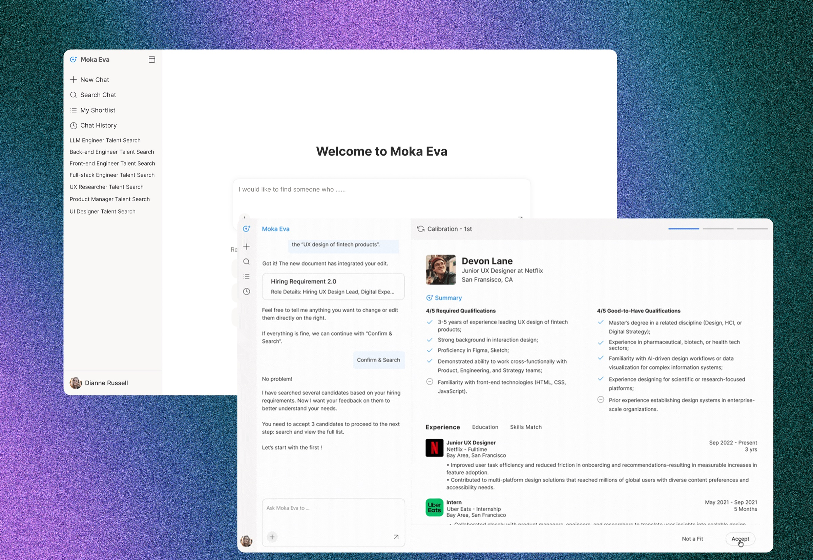
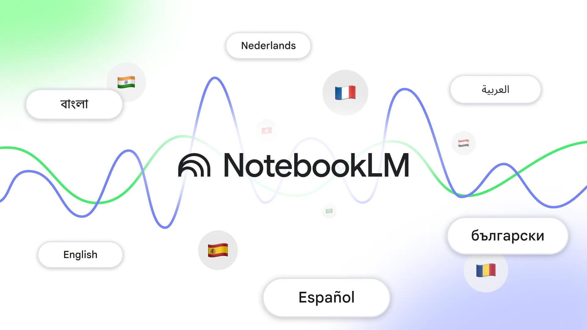

01
Making Complexity Navigable
Sense Messaging · Platform Redesign · B2B SaaS
Reframed a UI cleanup into a platform-level redesign — unifying fragmented workflows into one system that later absorbed five new capabilities without a rebuild.
37.3861° N · 122.0839° W
Now · Bay Area · California
01
Sense Messaging · Platform Redesign · B2B SaaS
Reframed a UI cleanup into a platform-level redesign — unifying fragmented workflows into one system that later absorbed five new capabilities without a rebuild.
02
Moka Eva · AI Talent Search Agent · 0→1
Led the end-to-end design of an AI talent search agent that helps recruiters discover the right talent — even when they can’t fully articulate what “good” looks like upfront.

03
NotebookLM · Google Labs · AI Product Design
Designed key AI-native experiences that shape how people navigate and control what NotebookLM generates and remembers — from multi-episode audio to playback queues and memory personalization.

04
Broadcast Suppression · Trust & Safety · B2B SaaS
Designed safeguards against excessive candidate messaging to address fatigue and compliance risks — balancing recruiter speed with admin oversight.
HOW I WORK
01See systems
I look past the surface ask and find the structure underneath.
02Understand people
I build frameworks and concepts that make the problem understandable.
03Ship clarity
I make deliberate decisions under uncertainty and drive ideas forward.
Kind words
See systems
“Vickey does a tremendous job with aligning business and technical decisions into simple to understand front-end designs … pushing the product managers and developers to think about user experience impacts.”
Understand people
“… she would regularly ask for feedback … I have been supervising for over 10 years and find that this is a rare and extremely desirable behavior.”
Ship clarity
“… stay focused under pressure and maintain a clear vision … no matter how complex the challenge.”
01 / 02
About
Hi, I’m Vickey.
Where the three lines came from
Architecture
taught me to see systems.
Marketing
taught me to understand people.
SaaS
taught me to ship clarity through complexity.
AI
is teaching me to design for uncertainty.
Different chapters, same instinct: understand the whole, find the pattern, build something clearer.
Playground
Architecture
Limited & Unlimited
Urban design
Isolation & Vitality
Marketing design
Graphic design & poster
Same. That’s usually where the interesting questions begin.
37.3861° N · 122.0839° W
Now · Bay Area · California